Creating instances
Note
This tutorial refers to instancing scenes in the editor. To learn how to instance scenes from code, see Nodes and scene instances.
Godot's approach to instancing described below should not be confused with hardware instancing that can be used to render large amounts of similar objects quickly. See Optimization using MultiMeshes instead.
In the previous part, we saw that a scene is a collection of nodes organized in a tree structure, with a single node as its root. You can split your project into any number of scenes. This feature helps you break down and organize your game's different components.
You can create as many scenes as you'd like and save them as files with the
.tscn extension, which stands for "text scene". The label.tscn file from
the previous lesson was an example. We call those files "Packed Scenes" as they
pack information about your scene's content.
Here's an example of a ball. It's composed of a RigidBody2D node as its root named Ball, which allows the ball to fall and bounce on walls, a Sprite2D node, and a CollisionShape2D.
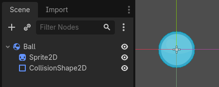
Once you have saved a scene, it works as a blueprint: you can reproduce it in other scenes as many times as you'd like. Replicating an object from a template like this is called instancing.
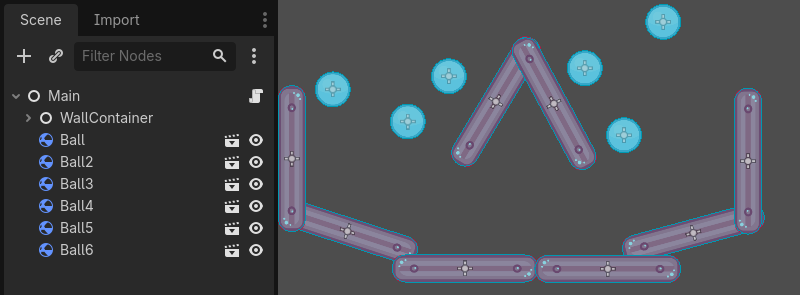
As we mentioned in the previous part, instanced scenes behave like a node: the editor hides their content by default. When you instance the Ball, you only see the Ball node. Notice also how each duplicate has a unique name.
Every instance of the Ball scene starts with the same structure and properties
as ball.tscn. However, you can modify each independently, such as changing
how they bounce, how heavy they are, or any property exposed by the source
scene.
In practice
Let's use instancing in practice to see how it works in Godot. We invite you to download the ball's sample project we prepared for you: instancing_starter.zip.
Extract the archive on your computer. To import it, you need the Project Manager. The Project Manager is accessed by opening Godot, or if you already have Godot opened, click on (Ctrl + Shift + Q, Ctrl + Option + Cmd + Q on macOS)
In the Project Manager, click the button to import the project.
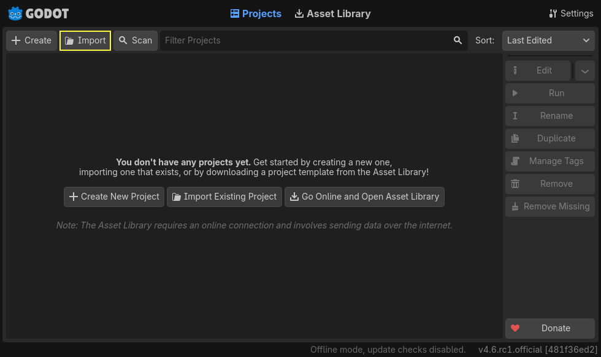
In the pop-up that appears navigate to the folder you extracted.
Double-click the project.godot file to open it.
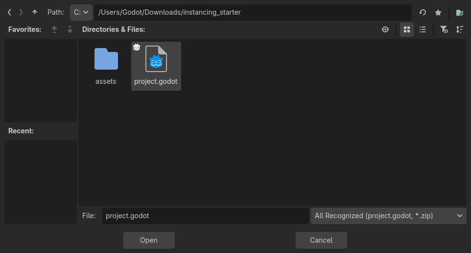
Finally, click the button.
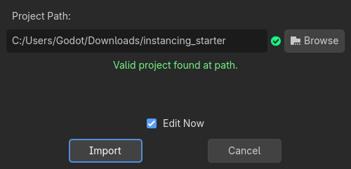
A window notifying you that the project was last opened in an older Godot version may appear. That's not an issue. Click to open the project.
The project contains two packed scenes: main.tscn, containing walls against
which the ball collides, and ball.tscn. The Main scene should open
automatically. If you're seeing an empty 3D scene instead of the main scene, click the 2D button at the top of the screen.


Let's add a ball as a child of the Main node. In the Scene dock, select the Main node. Then, click the link icon at the top of the scene dock. This button allows you to add an instance of a scene as a child of the currently selected node.
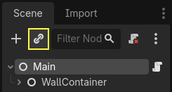
Double-click the ball scene to instance it.
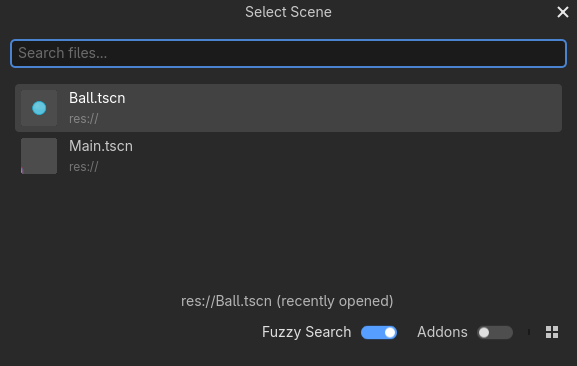
The ball appears in the top-left corner of the viewport.
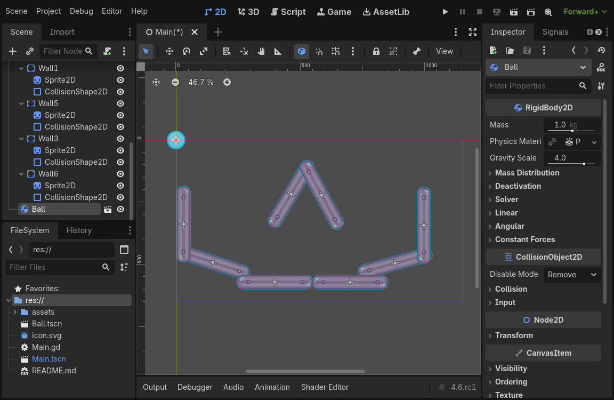
Click on it and drag it towards the center of the view.
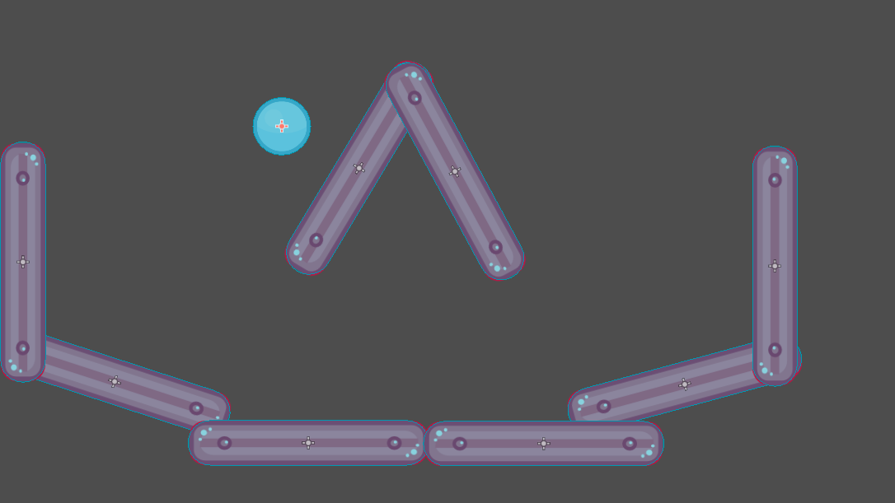
Play the game by pressing F5 (Cmd + B on macOS). You should see it fall.
Now, we want to create more instances of the Ball node. With the ball still selected, press Ctrl + D (Cmd + D on macOS) to call the duplicate command. Click and drag to move the new ball to a different location.

You can repeat this process until you have several in the scene.
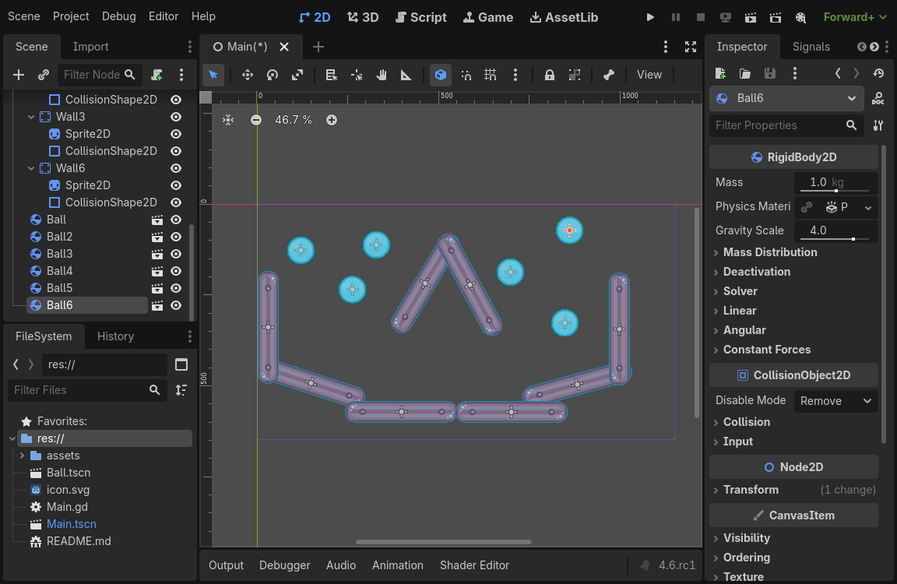
Play the game again. You should now see every ball fall independently from one another. This is what instances do. Each is an independent reproduction of a template scene.
Editing scenes and instances
There is more to instances. With this feature, you can:
Change the properties of one ball without affecting the others using the Inspector.
Change the default properties of every Ball by opening the
ball.tscnscene and making a change to the Ball node there. Upon saving, all instances of the Ball in the project will see their values update.
Note
Changing a property on an instance always overrides values from the corresponding packed scene.
Let's try this. Double-click ball.tscn in the FileSystem to open it.

In the Scene dock on the left, select the Ball node. Then, in the Inspector on the right, click on the PhysicsMaterial property to expand it.
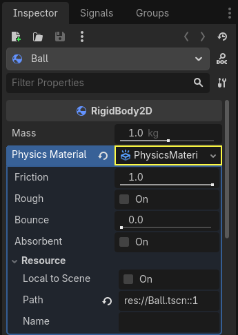
Set its Bounce property to 0.5 by clicking on the number field, typing 0.5,
and pressing Enter.

Play the game by pressing F5 (Cmd + B on macOS) and notice how all balls now bounce a lot more. As the Ball scene is a template for all instances, modifying it and saving causes all instances to update accordingly.
Let's now adjust an individual instance. Head back to the Main scene by clicking on the corresponding tab above the viewport.
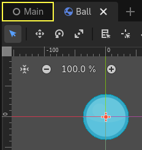
Select one of the instanced Ball nodes and, in the Inspector, set its
Gravity Scale value to 10.

A grey "revert" button appears next to the adjusted property.
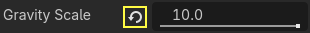
This icon indicates you are overriding a value from the source packed scene. Even if you modify the property in the original scene, the value override will be preserved in the instance. Clicking the revert icon will restore the property to the value in the saved scene.
Rerun the game and notice how this ball now falls much faster than the others.
Note
You may notice you are unable to change the values of the PhysicsMaterial of the ball. This is because PhysicsMaterial is a resource, and needs to be made unique before you can edit it in a scene that is linking to its original scene. To make a resource unique for one instance, right-click on the Physics Material property in the Inspector and click in the context menu.
Resources are another essential building block of Godot games we will cover in a later lesson.
Scene instances as a design language
Instances and scenes in Godot offer an excellent design language, setting the engine apart from others out there. We designed Godot around this concept from the ground up.
We recommend dismissing architectural code patterns when making games with Godot, such as Model-View-Controller (MVC) or Entity-Relationship diagrams. Instead, you can start by imagining the elements players will see in your game and structure your code around them.
For example, you could break down a shooter game like so:

You can come up with a diagram like this for almost any type of game. Each rectangle represents an entity that's visible in the game from the player's perspective. The arrows point towards the instantiator of each scene.
Once you have a diagram, we recommend creating a scene for each element listed in it to develop your game. You'll use instancing, either by code or directly in the editor, to build your tree of scenes.
Programmers tend to spend a lot of time designing abstract architectures and trying to fit components into it. Designing based on scenes makes development faster and more straightforward, allowing you to focus on the game logic itself. Because most game components map directly to a scene, using a design based on scene instantiation means you need little other architectural code.
Here's the example of a scene diagram for an open-world game with tons of assets and nested elements:

Imagine we started by creating the room. We could make a couple of different room scenes, with unique arrangements of furniture in them. Later, we could make a house scene that uses multiple room instances for the interior. We would create a citadel out of many instanced houses and a large terrain on which we would place the citadel. Each of these would be a scene instancing one or more sub-scenes.
Later, we could create scenes representing guards and add them to the citadel. They would be indirectly added to the overall game world.
With Godot, it's easy to iterate on your game like this, as all you need to do is create and instantiate more scenes. We designed the editor to be accessible to programmers, designers, and artists alike. A typical team development process can involve 2D or 3D artists, level designers, game designers, and animators, all working with the Godot editor.
Summary
Instancing, the process of producing an object from a blueprint, has many handy uses. With scenes, it gives you:
The ability to divide your game into reusable components.
A tool to structure and encapsulate complex systems.
A language to think about your game project's structure in a natural way.